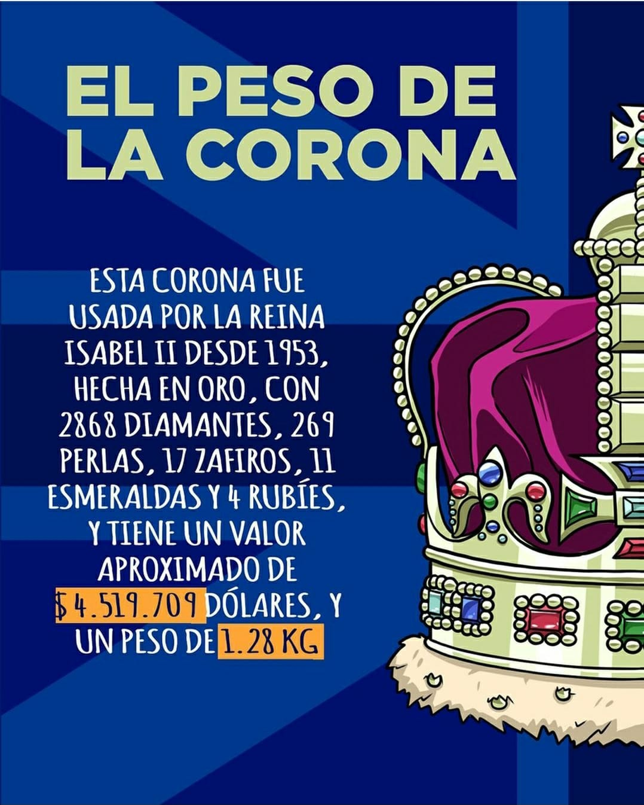
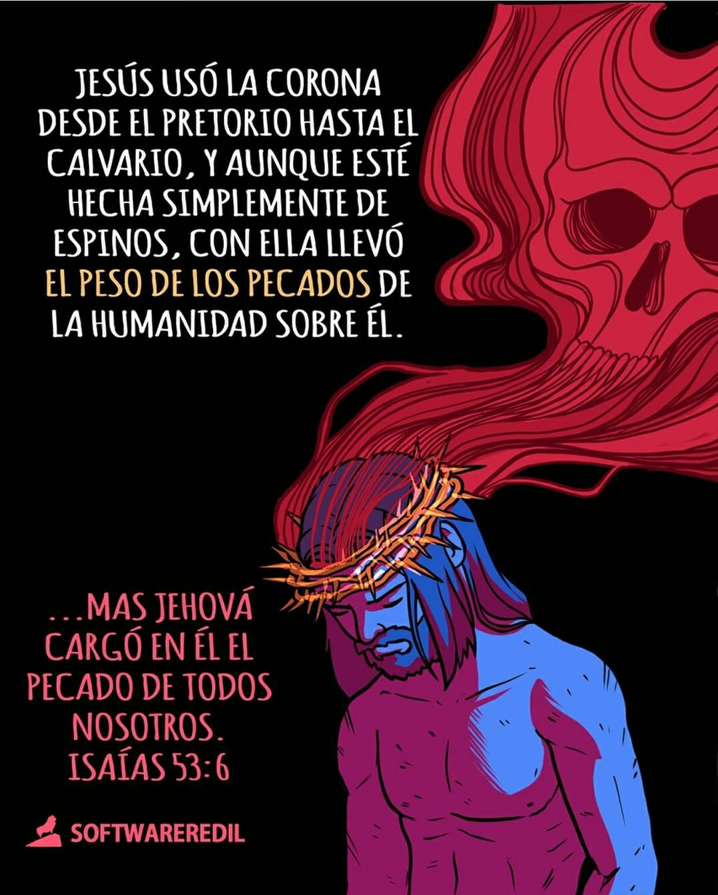
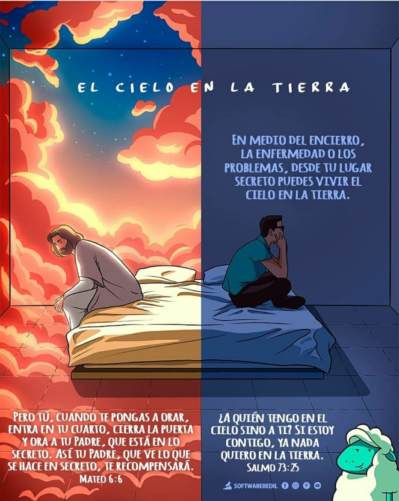

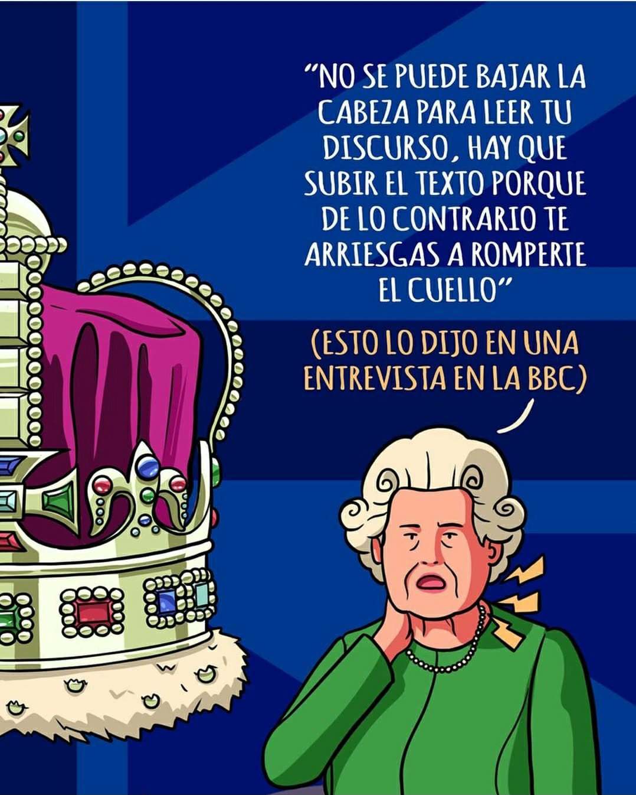
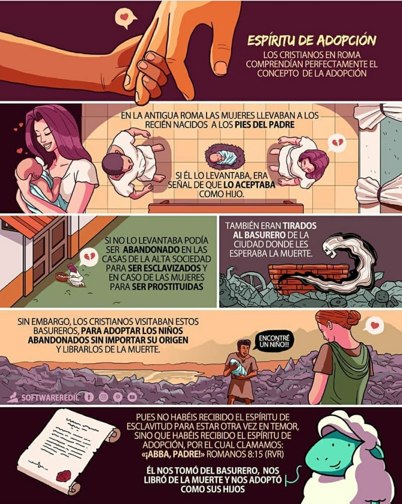
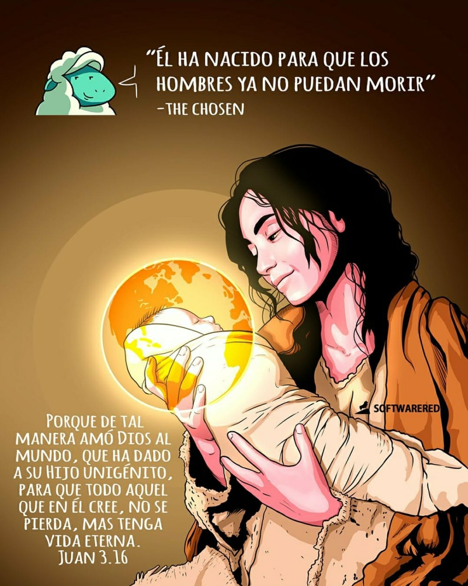
 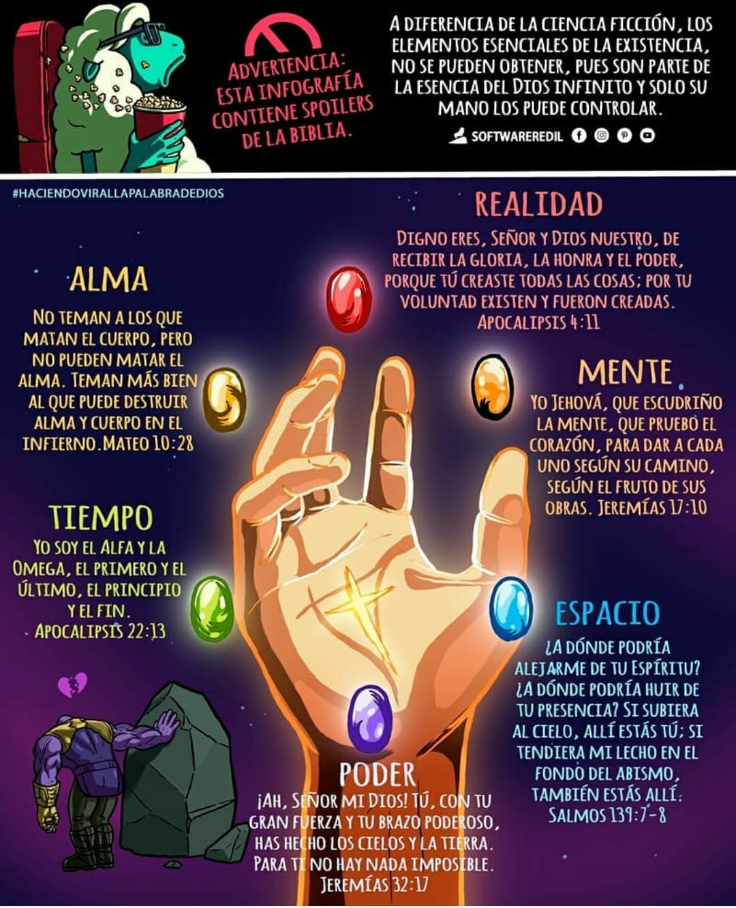
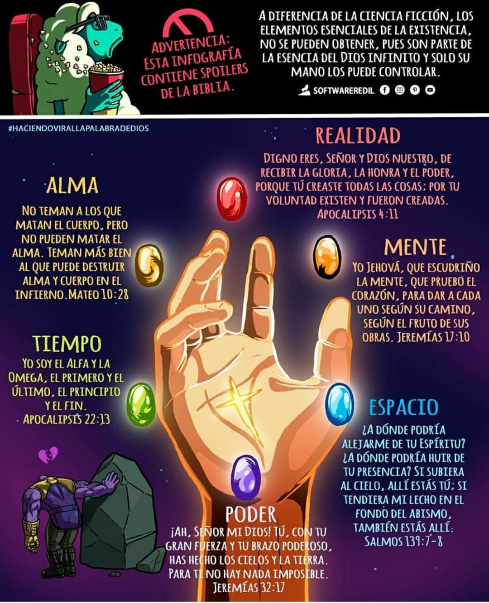
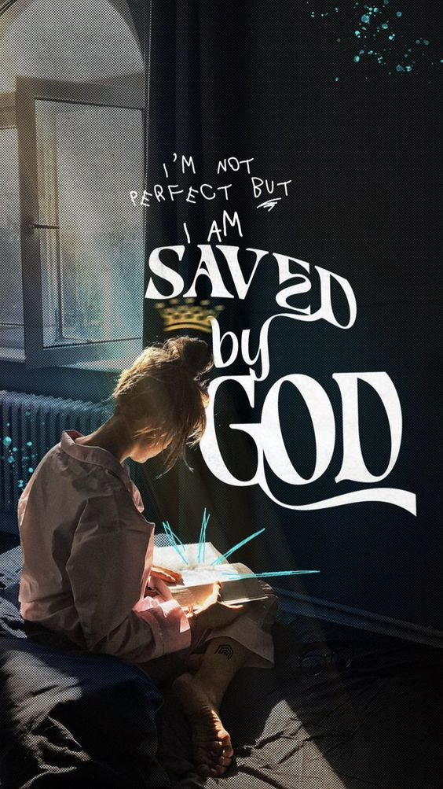
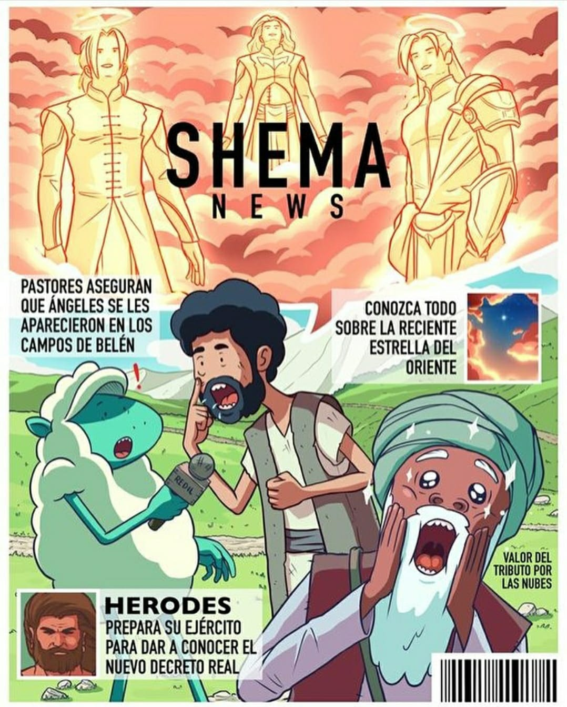
Para entender poco a poco, todo lo que abarca quien es Jésus y su propósito en la vida, debemos primero saber qué es la cosmovisión cristiana, entra al enlace para saber más.
Entra aqui para verA Jésus se le conoce de muchas maneras, puesto que su gran inmensidad en significado se quedaria corto en una sola definición. Aqui te dejo uno video donde podrás conocer porque se le llama el agua de Vida.
Entra aqui para verAqui te dejo un video sobre las buenas nuevas que el pueblo antiguo estuvo esperando por años.
Entra aqui para verPara el tema de la Trinidad que no es facil de explica te dejo en el siguiente enlace un video donde se explica en buena parte.
Entra aqui para verAqui te dejo un video que te narra quien es el Espirítu Santo dentro de la Trinidad y su particular significado desde el comienzo de la vida que conocemos.
Entra aqui para verAqui puedes encontrar la historia de la biblia contada por el estudio de Bible Project,ya qué lo narra de forma clara.
Entra aqui para ver
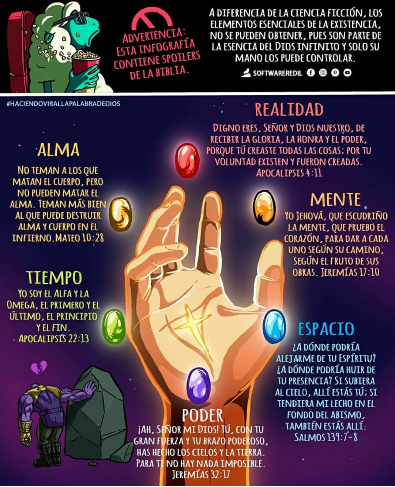